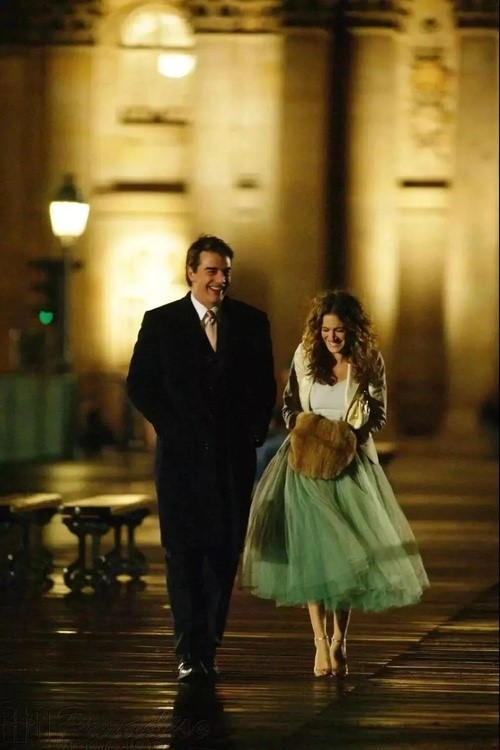
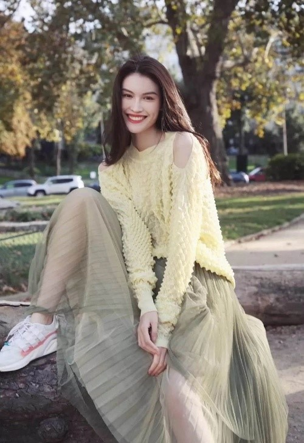
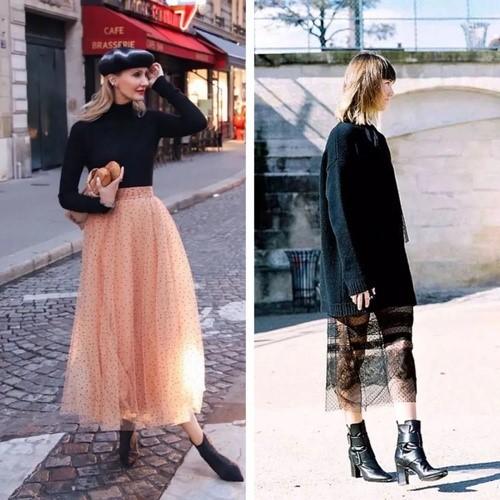
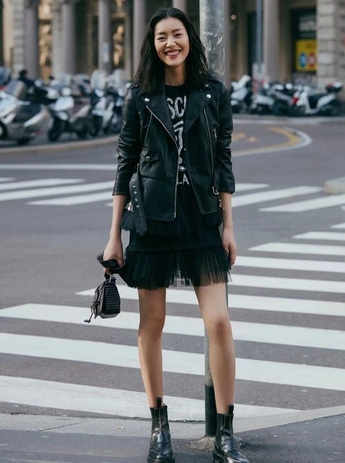
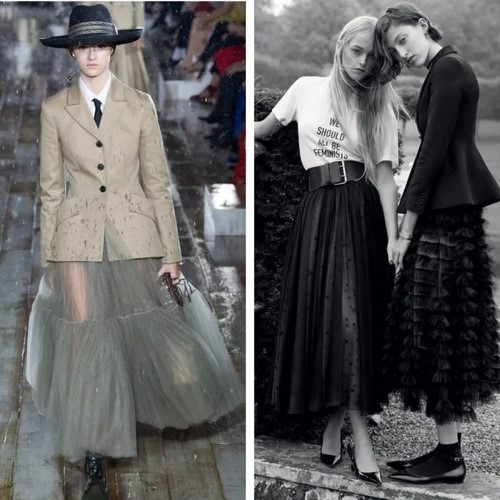
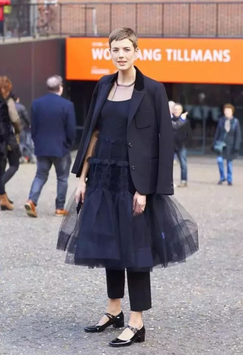
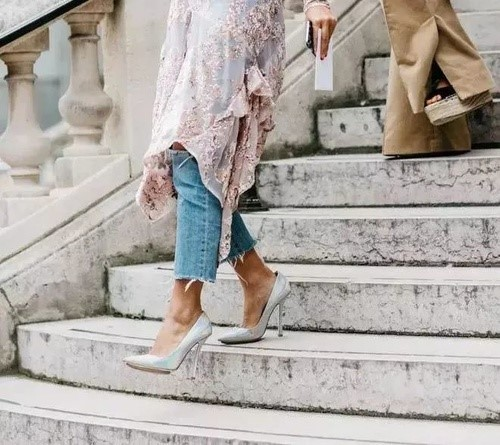
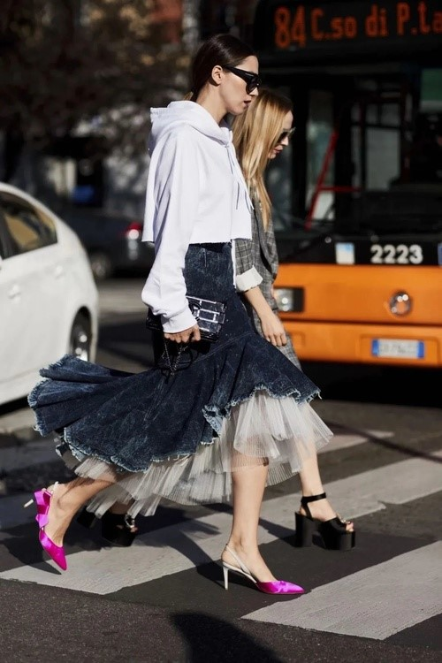
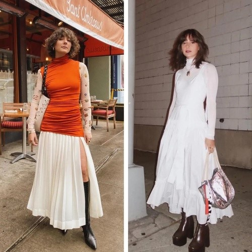
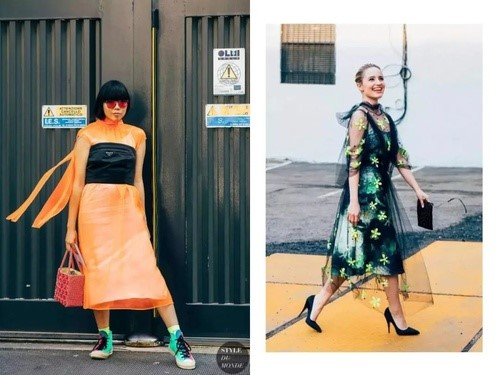

公主裙最主要的表现形式就是纱裙，这种材质的裙纸最早出现在18世纪的法国，衍生于维多利亚女王的“婚纱裙”~，
也许从那时起“穿上美丽的纱裙”就代表着你就会如公主般接受世界的宠爱！
随着生活质量和时髦态度的转变，纱裙也不再是婚纱和贵族的专属。
《欲望都市》中Carrie bradshaw穿着一条绿色纱裙与Mr.Big走在夜幕中，当精致女孩收获幸福，连空气中都满是甜蜜的味道~

在日常生活中，纱裙一般都会怎么搭配呢？
一直以来，很多女生不敢尝试纱裙是因为，总觉得自己穿上纱裙之后就像“阿依莲的小公主”，超级土。
但其实，纱裙属于下半身的搭配，是很好把控风格的。
一件同色系的上衣立马控场，温柔精致一点都不浮夸。

如果你一直以温柔甜美风格示人，那么建议这类的时尚选手选择用针织衫来搭配纱裙，
大家可以根据自己体型，例如上身瘦的姐妹可以选择修身针织露出身形和腰线，这样大家就可以选择一件较为蓬松的多层纱裙。
反之可以选择宽松的廓形毛衣搭配单层纱裙~

酷一点的女孩子同样可以尝试纱裙的造型，用飒到飞起的中性风单品搭配纱裙打造娘man平衡的时尚look，
像是机车夹克、飞行员夹克、西装都是可以供大家选择的外套品类~


如果这些常规搭配满足不了大家，那姐妹们不妨试试Dress Over Pants的穿法

及踝的牛仔裤和纱裙绝对是最佳拍档，不仅能掩盖住腿部线条的缺陷，还能轻松打造出层次感，轻松展现你的搭配功力。

大家还可以选择这种带有拼接设计的纱裙，例如下面的这件牛仔和纱裙的拼接材质就单一材质更显时髦！

当然啦！姐妹们在选择纱裙的时候也要根据自身条件找到一些小窍门，
比如胯比较宽或者腿上有肉肉的姐妹们可以选择材质比较柔软并且没有那么蓬单层纱裙，这样既可以达到飘逸的仙女效果又可以起到遮肉的作用。

相对比较有肉肉感的女生，就不要选择过于膨胀感的裙子，过于飞扬的纱面很容易在视觉上增加体积，一不小心就会穿出水桶腰小胖墩的既视感。

最后也是最重要的就是，姐妹们一定在选择纱裙的时候正视自己的身高，拖地的长裙固然很美，但是我们还是不要抢吸尘器的工作比较好！